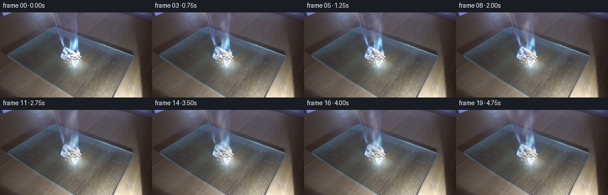
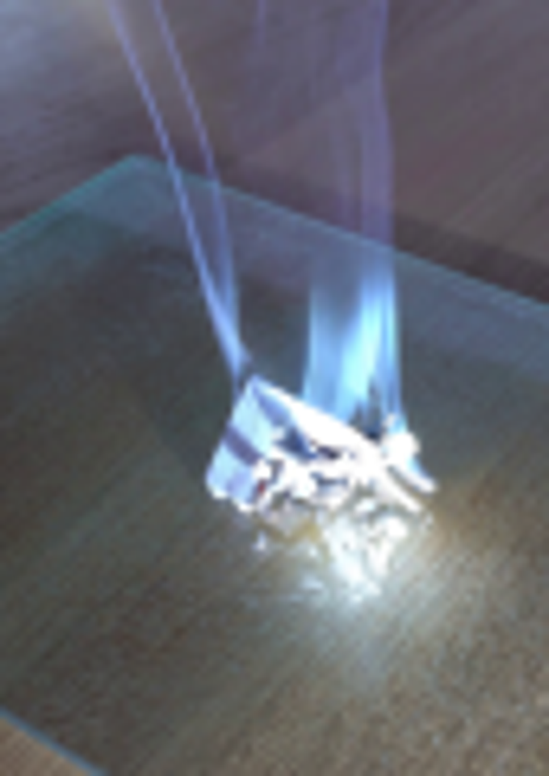
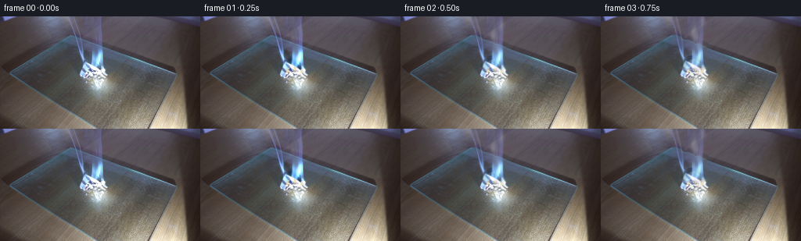
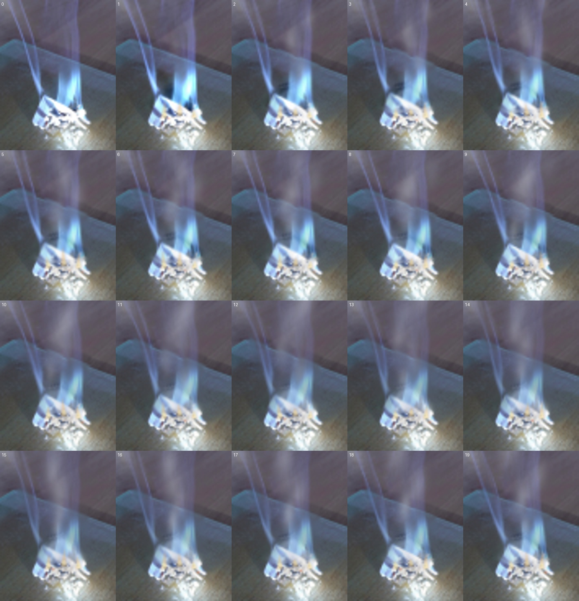

CODING AGENTS AS PIXEL WORLD MODELS
traex/GPT-5.6-Sol · 0141
点击播放 · 原生 RGB 像素
逐轮保存的候选
回放视频、检查图与代码变化。
每份候选均可单独播放。实际图片检查记录在下方工具轨迹中。
候选 01播放与检查图
点击播放 · 原生 RGB 像素

展开代码变化
--- 上一保存版本
+++ 本次保存版本
@@ -0,0 +1,202 @@
+from pathlib import Path
+import math
+import numpy as np
+import cv2
+from PIL import Image
+import artifact_io
+
+# Deterministic, local 2-D compositing of smoke, flame and heat shimmer.
+CASE_DIR = Path(__file__).resolve().parent
+W, H = 256, 144
+N, FPS = 20, 4
+rng = np.random.default_rng(141)
+
+first = np.asarray(Image.open(CASE_DIR / "first_frame.png").convert("RGB"), dtype=np.uint8)
+assert first.shape == (H, W, 3)
+
+# Recover the fixed set behind the two smoke columns. This clean plate is only
+# used under moving translucent smoke; the first submitted frame remains untouched.
+mask = np.zeros((H, W), np.uint8)
+cv2.line(mask, (91, 0), (106, 59), 255, 7)
+cv2.line(mask, (111, 0), (117, 57), 255, 8)
+cv2.line(mask, (127, 0), (130, 62), 255, 11)
+cv2.ellipse(mask, (117, 55), (19, 15), 0, 0, 360, 255, -1)
+mask[69:, :] = 0
+mask = cv2.GaussianBlur(mask, (0, 0), 1.0)
+clean = cv2.inpaint(first, (mask > 15).astype(np.uint8) * 255, 5, cv2.INPAINT_TELEA)
+# Extract the photographed smoke as a signed translucent layer. Moving this
+# layer preserves the grain, illumination and optics of the supplied frame.
+photo_delta = (first.astype(np.float32) - clean.astype(np.float32)) * (mask[..., None] / 255.0)
+
+Y, X = np.mgrid[0:H, 0:W].astype(np.float32)
+
+# Persistent wisps: negative birth times make smoke already present at frame zero.
+wisps = []
+for i in range(16):
+ wisps.append(dict(
+ birth=-2.8 + i * 0.48 + rng.uniform(-0.12, 0.12),
+ life=rng.uniform(2.5, 3.8),
+ x0=rng.normal(119.0, 4.5),
+ drift=rng.uniform(-4.0, 5.0),
+ bend=rng.uniform(-6.0, 6.0),
+ phase=rng.uniform(0, 2 * math.pi),
+ scale=rng.uniform(0.75, 1.35),
+ tone=rng.uniform(0, 1),
+ ))
+
+# Additional fine threads emitted throughout, kept faint and narrow.
+threads = []
+for i in range(12):
+ threads.append(dict(
+ birth=-1.8 + i * 0.58 + rng.uniform(-.15, .15),
+ life=rng.uniform(2.0, 3.2), x0=rng.normal(119, 5),
+ side=rng.uniform(-1, 1), phase=rng.uniform(0, 6.28)))
+
+def alpha_over(img, color, alpha):
+ """Alpha-composite a constant RGB color into a float image."""
+ a = np.clip(alpha, 0.0, 0.92)[..., None]
+ return img * (1.0 - a) + np.asarray(color, np.float32) * a
+
+def smoke_layer(t):
+ """Return a softly turbulent, white/blue-gray smoke layer."""
+ out = np.zeros((H, W, 4), np.float32) # premultiplied RGB + accumulated alpha
+ # Render separately then composite blobs front-to-back. Each wisp is an
+ # asymmetric train of blurred puffs, not a rigid translating sprite.
+ for wi, w in enumerate(wisps):
+ age = t - w['birth']
+ if age < 0 or age > w['life']:
+ continue
+ q = age / w['life']
+ # smoke expands, rises quickly, and fades near the top/end
+ nblob = 6
+ for j in range(nblob):
+ trail = j / (nblob - 1)
+ aage = max(0.05, age - 0.16 * trail)
+ yy = 67.0 - (13.0 + 22.5 * aage) - trail * (6.0 + 5.0*q)
+ xx = (w['x0'] + w['drift'] * aage + w['bend'] * q*q +
+ (2.0 + 1.7*q) * math.sin(w['phase'] + 1.7*aage + trail*1.4))
+ # Turbulent swelling; upper smoke is broader and more transparent.
+ sx = w['scale'] * (1.7 + 2.6*q + 0.65*trail)
+ sy = w['scale'] * (4.0 + 4.3*q + 1.2*trail)
+ g = np.exp(-0.5*(((X-xx)/sx)**2 + ((Y-yy)/sy)**2))
+ opacity = (0.050 + 0.028*(1-q)) * (1.0 - 0.55*trail)
+ opacity *= min(1.0, age/0.18) * min(1.0, (w['life']-age)/0.65)
+ # Broken edges from an analytic low-frequency modulation.
+ mod = 0.77 + 0.23*np.sin((X*0.31 + Y*0.19) + w['phase'] + t*1.1)
+ a = np.clip(g * opacity * mod, 0, 0.14)
+ tone = np.array([215, 220, 225], np.float32) if w['tone'] > .28 else np.array([190, 202, 220], np.float32)
+ olda = out[...,3]
+ out[...,:3] += tone[None,None,:] * a[...,None] * (1.0-olda[...,None])
+ out[...,3] = olda + a*(1.0-olda)
+ # Fine sinuous threads make the white emission readable without a cloudy blob.
+ for th in threads:
+ age = t - th['birth']
+ if age < 0 or age > th['life']:
+ continue
+ fade = min(1.0, age/.20) * min(1.0, (th['life']-age)/.45)
+ pts=[]
+ for k in range(15):
+ s=k/14
+ yy=67 - s*(14+age*25)
+ xx=th['x0'] + th['side']*age*4.5 + 2.4*math.sin(th['phase']+s*4.4+age*1.2) + s*s*th['side']*5
+ pts.append((int(round(xx)), int(round(yy))))
+ mm=np.zeros((H,W),np.uint8)
+ cv2.polylines(mm,[np.array(pts,np.int32)],False,100,1,cv2.LINE_AA)
+ mm=cv2.GaussianBlur(mm,(0,0),1.4+age*.25).astype(np.float32)/255.0
+ a=mm*(0.18*fade)
+ olda=out[...,3]
+ tone=np.array([215,220,228],np.float32)
+ out[...,:3] += tone*a[...,None]*(1-olda[...,None])
+ out[...,3] = olda+a*(1-olda)
+ return out
+
+def draw_flame(frame, t, index):
+ """Small translucent flames rooted in the folded paper."""
+ # Supersampled masks give tapered, non-jagged tongues at this resolution.
+ S=4
+ outer=np.zeros((H*S,W*S),np.uint8)
+ inner=np.zeros_like(outer)
+ hot=np.zeros_like(outer)
+ rr=np.random.default_rng(9000+index)
+ for k,(bx,by) in enumerate([(111.5,72),(121.0,70.5),(130.0,72)]):
+ phase=1.4*k
+ height=10.5 + 5.0*math.sin(5.1*t+phase) + rr.uniform(-1.2,1.2)
+ height=max(6.5,height)
+ lean=2.2*math.sin(3.7*t+phase*.8)
+ width=3.2 if k==1 else 2.5
+ poly=np.array([
+ [(bx-width)*S, by*S],[(bx-1.2)*S,(by-height*.42)*S],
+ [(bx+lean)*S,(by-height)*S],[(bx+1.5)*S,(by-height*.46)*S],
+ [(bx+width)*S,by*S]],np.int32)
+ cv2.fillPoly(outer,[poly],150,lineType=cv2.LINE_AA)
+ ih=height*.68
+ ip=np.array([[(bx-1.6)*S,by*S],[(bx+.35*lean)*S,(by-ih)*S],[(bx+1.6)*S,by*S]],np.int32)
+ cv2.fillPoly(inner,[ip],185,lineType=cv2.LINE_AA)
+ cv2.ellipse(hot,(int(bx*S),int((by-1.3)*S)),(int(1.3*S),int(2.1*S)),0,0,360,190,-1)
+ outer=cv2.resize(cv2.GaussianBlur(outer,(0,0),2.5),(W,H),interpolation=cv2.INTER_AREA)/255.0
+ inner=cv2.resize(cv2.GaussianBlur(inner,(0,0),1.5),(W,H),interpolation=cv2.INTER_AREA)/255.0
+ hot=cv2.resize(cv2.GaussianBlur(hot,(0,0),1.2),(W,H),interpolation=cv2.INTER_AREA)/255.0
+ frame=alpha_over(frame,(88,145,255),outer*.28) # blue combustion envelope
+ frame=alpha_over(frame,(255,181,69),inner*.47) # warm visible tongue
+ frame=alpha_over(frame,(255,247,194),hot*.58) # white-hot roots
+ return frame
+
+frames=[]
+for i in range(N):
+ if i == 0:
+ frames.append(first.copy())
+ continue
+ t=i/FPS
+ # Replace only the old photographed smoke region, ramping quickly enough to
+ # avoid a cut after the exact first frame.
+ blend=min(1.0, i/2.5)
+ img=first.astype(np.float32)*(1-blend*mask[...,None]/255.0) + clean.astype(np.float32)*(blend*mask[...,None]/255.0)
+
+ # Re-use the real captured smoke, gently advected by rising air. Signed layer
+ # includes both highlights and the subtle shadows of translucent smoke.
+ dx = (1.1*np.sin(t*2.0 + Y*.07) + .018*(67-Y)*math.sin(t*.8)) * blend
+ dy = (-1.0 - .55*math.sin(t*1.4)) * blend
+ mapx=(X-dx).astype(np.float32); mapy=(Y-dy).astype(np.float32)
+ moved=np.empty_like(photo_delta)
+ for c in range(3):
+ moved[...,c]=cv2.remap(photo_delta[...,c],mapx,mapy,cv2.INTER_LINEAR,borderMode=cv2.BORDER_CONSTANT)
+ moved *= (0.72 + .20*math.sin(t*1.3))
+ img=np.clip(img+moved,0,255)
+
+ # Heat shimmer: only a very slight refraction directly above the fire.
+ heat_alpha=np.exp(-(((X-120)/17)**2 + ((Y-52)/24)**2))*0.42
+ hx=(0.42*np.sin(Y*.48+t*9.0)*heat_alpha).astype(np.float32)
+ warped=cv2.remap(img,(X+hx).astype(np.float32),Y,cv2.INTER_LINEAR,borderMode=cv2.BORDER_REFLECT)
+ img=img*(1-heat_alpha[...,None]*.22)+warped*(heat_alpha[...,None]*.22)
+
+ # Gradually spreading char on the folded paper, irregular but restrained.
+ char=np.exp(-0.5*(((X-(120+.5*math.sin(t)))/(5.0+0.36*t))**2 + ((Y-71.5)/(2.4+.20*t))**2))
+ char*=np.clip((t-.25)/3.5,0,.32)*(0.76+.24*np.sin(X*1.7+Y*.9))
+ img=alpha_over(img,(24,20,18),char)
+
+ # Flickering warm pool reflected by the textured glass board.
+ flick=.5+.5*math.sin(10.4*t)+.18*math.sin(21*t)
+ glow=np.exp(-(((X-121)/22)**2 + ((Y-79)/11)**2))*(.014+.020*flick)
+ img=alpha_over(img,(255,166,62),glow)
+ img=draw_flame(img,t,i)
+
+ smoke=smoke_layer(t)
+ # Fade newly synthesized detail in over frame 1 while retaining continuous emission.
+ sa=smoke[...,3]*min(1.0,i/2.0)
+ # smoke RGB is premultiplied; recover a stable local color where visible
+ scol=np.zeros_like(smoke[...,:3])
+ nz=smoke[...,3]>.0001
+ scol[nz]=smoke[...,:3][nz]/smoke[...,3][nz,None]
+ img=img*(1-sa[...,None])+scol*sa[...,None]
+
+ # A handful of tiny red embers nestled in folds (subpixel-soft, flickering).
+ emb=np.zeros((H,W),np.float32)
+ for e,(ex,ey) in enumerate([(114,72),(124,73),(132,74)]):
+ amp=max(0,math.sin(t*8.7+e*2.1))
+ emb += np.exp(-.5*(((X-ex)/.65)**2+((Y-ey)/.55)**2))*.30*amp
+ img=alpha_over(img,(255,79,16),emb)
+ frames.append(np.clip(img,0,255).astype(np.uint8))
+
+frames=np.stack(frames,axis=0)
+assert np.array_equal(frames[0],first)
+artifact_io.save(frames, CASE_DIR)
可观测工具轨迹
实际执行的命令与返回图片。
命令 1exit 0
/bin/bash -lc "cat prompt.txt && printf '\\n---RULES---\\n' && cat GENERATION_RULES.md"
命令 2exit 0
/bin/bash -lc "find . -maxdepth 2 -type f -printf '%p\\n' | sort"
命令 3exit 0
/bin/bash -lc 'cat artifact_io.py'
命令 4exit 0
/bin/bash -lc "python - <<'PY'
from PIL import Image
import numpy as np
im=np.array(Image.open('first_frame.png').convert('RGB'))
print(im.shape, im.dtype, im.min(), im.max(), im.mean(axis=(0,1)))
PY"命令 5exit 0
/bin/bash -lc "python - <<'PY'
from PIL import Image
im=Image.open('first_frame.png')
im.crop((70,0,155,120)).resize((680,960)).save('.tmp/crop.png')
PY"命令 6exit 0
/bin/bash -lc "python - <<'PY' for m in ['cv2','scipy','numpy','PIL']: try: q=__import__(m); print(m,'ok',getattr(q,'__version__','')) except Exception as e: print(m,e) PY"
命令 7exit 1
/bin/bash -lc "cat > generate.py <<'PY'
from pathlib import Path
import math
import numpy as np
import cv2
from PIL import Image
import artifact_io
# Deterministic, local 2-D compositing of smoke, flame and heat shimmer.
CASE_DIR = Path(__file__).resolve().parent
W, H = 256, 144
N, FPS = 20, 4
rng = np.random.default_rng(141)
first = np.asarray(Image.open(CASE_DIR / \"first_frame.png\").convert(\"RGB\"), dtype=np.uint8)
assert first.shape == (H, W, 3)
# Recover the fixed set behind the two smoke columns. This clean plate is only
# used under moving translucent smoke; the first submitted frame remains untouched.
mask = np.zeros((H, W), np.uint8)
cv2.line(mask, (91, 0), (106, 59), 255, 7)
cv2.line(mask, (111, 0), (117, 57), 255, 8)
cv2.line(mask, (127, 0), (130, 62), 255, 11)
cv2.ellipse(mask, (117, 55), (19, 15), 0, 0, 360, 255, -1)
mask[69:, :] = 0
mask = cv2.GaussianBlur(mask, (0, 0), 1.0)
clean = cv2.inpaint(first, (mask > 15).astype(np.uint8) * 255, 5, cv2.INPAINT_TELEA)
# Extract the photographed smoke as a signed translucent layer. Moving this
# layer preserves the grain, illumination and optics of the supplied frame.
photo_delta = (first.astype(np.float32) - clean.astype(np.float32)) * (mask[..., None] / 255.0)
Y, X = np.mgrid[0:H, 0:W].astype(np.float32)
# Persistent wisps: negative birth times make smoke already present at frame zero.
wisps = []
for i in range(16):
wisps.append(dict(
birth=-2.8 + i * 0.48 + rng.uniform(-0.12, 0.12),
life=rng.uniform(2.5, 3.8),
x0=rng.normal(119.0, 4.5),
drift=rng.uniform(-4.0, 5.0),
bend=rng.uniform(-6.0, 6.0),
phase=rng.uniform(0, 2 * math.pi),
scale=rng.uniform(0.75, 1.35),
tone=rng.uniform(0, 1),
))
# Additional fine threads emitted throughout, kept faint and narrow.
threads = []
for i in range(12):
threads.append(dict(
birth=-1.8 + i * 0.58 + rng.uniform(-.15, .15),
life=rng.uniform(2.0, 3.2), x0=rng.normal(119, 5),
side=rng.uniform(-1, 1), phase=rng.uniform(0, 6.28)))
def alpha_over(img, color, alpha):
\"\"\"Alpha-composite a constant RGB color into a float image.\"\"\"
a = np.clip(alpha, 0.0, 0.92)[..., None]
return img * (1.0 - a) + np.asarray(color, np.float32) * a
def smoke_layer(t):
\"\"\"Return a softly turbulent, white/blue-gray smoke layer.\"\"\"
out = np.zeros((H, W, 4), np.float32) # premultiplied RGB + accumulated alpha
# Render separately then composite blobs front-to-back. Each wisp is an
# asymmetric train of blurred puffs, not a rigid translating sprite.
for wi, w in enumerate(wisps):
age = t - w['birth']
if age < 0 or age > w['life']:
continue
q = age / w['life']
# smoke expands, rises quickly, and fades near the top/end
nblob = 6
for j in range(nblob):
trail = j / (nblob - 1)
aage = max(0.05, age - 0.16 * trail)
yy = 67.0 - (13.0 + 22.5 * aage) - trail * (6.0 + 5.0*q)
xx = (w['x0'] + w['drift'] * aage + w['bend'] * q*q +
(2.0 + 1.7*q) * math.sin(w['phase'] + 1.7*aage + trail*1.4))
# Turbulent swelling; upper smoke is broader and more transparent.
sx = w['scale'] * (1.7 + 2.6*q + 0.65*trail)
sy = w['scale'] * (4.0 + 4.3*q + 1.2*trail)
g = np.exp(-0.5*(((X-xx)/sx)**2 + ((Y-yy)/sy)**2))
opacity = (0.050 + 0.028*(1-q)) * (1.0 - 0.55*trail)
opacity *= min(1.0, age/0.18) * min(1.0, (w['life']-age)/0.65)
# Broken edges from an analytic low-frequency modulation.
mod = 0.77 + 0.23*np.sin((X*0.31 + Y*0.19) + w['phase'] + t*1.1)
a = np.clip(g * opacity * mod, 0, 0.14)
tone = np.array([215, 220, 225], np.float32) if w['tone'] > .28 else np.array([190, 202, 220], np.float32)
olda = out[...,3]
out[...,:3] += tone[None,None,:] * a[...,None] * (1.0-olda[...,None])
out[...,3] = olda + a*(1.0-olda)
# Fine sinuous threads make the white emission readable without a cloudy blob.
for th in threads:
age = t - th['birth']
if age < 0 or age > th['life']:
continue
fade = min(1.0, age/.20) * min(1.0, (th['life']-age)/.45)
pts=[]
for k in range(15):
s=k/14
yy=67 - s*(14+age*25)
xx=th['x0'] + th['side']*age*4.5 + 2.4*math.sin(th['phase']+s*4.4+age*1.2) + s*s*th['side']*5
pts.append((int(round(xx)), int(round(yy))))
mm=np.zeros((H,W),np.uint8)
cv2.polylines(mm,[np.array(pts,np.int32)],False,100,1,cv2.LINE_AA)
mm=cv2.GaussianBlur(mm,(0,0),1.4+age*.25).astype(np.float32)/255.0
a=mm*(0.18*fade)
olda=out[...,3]
tone=np.array([215,220,228],np.float32)
out[...,:3] += tone*a[...,None]*(1-olda[...,None])
out[...,3] = olda+a*(1-olda)
return out
def draw_flame(frame, t, index):
\"\"\"Small translucent flames rooted in the folded paper.\"\"\"
# Supersampled masks give tapered, non-jagged tongues at this resolution.
S=4
outer=np.zeros((H*S,W*S),np.uint8)
inner=np.zeros_like(outer)
hot=np.zeros_like(outer)
rr=np.random.default_rng(9000+index)
for k,(bx,by) in enumerate([(111.5,72),(121.0,70.5),(130.0,72)]):
phase=1.4*k
height=10.5 + 5.0*math.sin(5.1*t+phase) + rr.uniform(-1.2,1.2)
height=max(6.5,height)
lean=2.2*math.sin(3.7*t+phase*.8)
width=3.2 if k==1 else 2.5
poly=np.array([
[(bx-width)*S, by*S],[(bx-1.2)*S,(by-height*.42)*S],
[(bx+lean)*S,(by-height)*S],[(bx+1.5)*S,(by-height*.46)*S],
[(bx+width)*S,by*S]],np.int32)
cv2.fillPoly(outer,[poly],150,lineType=cv2.LINE_AA)
ih=height*.68
ip=np.array([[(bx-1.6)*S,by*S],[(bx+.35*lean)*S,(by-ih)*S],[(bx+1.6)*S,by*S]],np.int32)
cv2.fillPoly(inner,[ip],185,lineType=cv2.LINE_AA)
cv2.ellipse(hot,(int(bx*S),int((by-1.3)*S)),(int(1.3*S),int(2.1*S)),0,0,360,190,-1)
outer=cv2.resize(cv2.GaussianBlur(outer,(0,0),2.5),(W,H),interpolation=cv2.INTER_AREA)/255.0
inner=cv2.resize(cv2.GaussianBlur(inner,(0,0),1.5),(W,H),interpolation=cv2.INTER_AREA)/255.0
hot=cv2.resize(cv2.GaussianBlur(hot,(0,0),1.2),(W,H),interpolation=cv2.INTER_AREA)/255.0
frame=alpha_over(frame,(88,145,255),outer*.28) # blue combustion envelope
frame=alpha_over(frame,(255,181,69),inner*.47) # warm visible tongue
frame=alpha_over(frame,(255,247,194),hot*.58) # white-hot roots
return frame
frames=[]
for i in range(N):
if i == 0:
frames.append(first.copy())
continue
t=i/FPS
# Replace only the old photographed smoke region, ramping quickly enough to
# avoid a cut after the exact first frame.
blend=min(1.0, i/2.5)
img=first.astype(np.float32)*(1-blend*mask[...,None]/255.0) + clean.astype(np.float32)*(blend*mask[...,None]/255.0)
# Re-use the real captured smoke, gently advected by rising air. Signed layer
# includes both highlights and the subtle shadows of translucent smoke.
dx = (1.1*math.sin(t*2.0 + Y*.07) + .018*(67-Y)*math.sin(t*.8)) * blend
dy = (-1.0 - .55*math.sin(t*1.4)) * blend
mapx=(X-dx).astype(np.float32); mapy=(Y-dy).astype(np.float32)
moved=np.empty_like(photo_delta)
for c in range(3):
moved[...,c]=cv2.remap(photo_delta[...,c],mapx,mapy,cv2.INTER_LINEAR,borderMode=cv2.BORDER_CONSTANT)
moved *= (0.72 + .20*math.sin(t*1.3))
img=np.clip(img+moved,0,255)
# Heat shimmer: only a very slight refraction directly above the fire.
heat_alpha=np.exp(-(((X-120)/17)**2 + ((Y-52)/24)**2))*0.42
hx=(0.42*np.sin(Y*.48+t*9.0)*heat_alpha).astype(np.float32)
warped=cv2.remap(img,(X+hx).astype(np.float32),Y,cv2.INTER_LINEAR,borderMode=cv2.BORDER_REFLECT)
img=img*(1-heat_alpha[...,None]*.22)+warped*(heat_alpha[...,None]*.22)
# Gradually spreading char on the folded paper, irregular but restrained.
char=np.exp(-0.5*(((X-(120+.5*math.sin(t)))/(5.0+0.36*t))**2 + ((Y-71.5)/(2.4+.20*t))**2))
char*=np.clip((t-.25)/3.5,0,.32)*(0.76+.24*np.sin(X*1.7+Y*.9))
img=alpha_over(img,(24,20,18),char)
# Flickering warm pool reflected by the textured glass board.
flick=.5+.5*math.sin(10.4*t)+.18*math.sin(21*t)
glow=np.exp(-(((X-121)/22)**2 + ((Y-79)/11)**2))*(.014+.020*flick)
img=alpha_over(img,(255,166,62),glow)
img=draw_flame(img,t,i)
smoke=smoke_layer(t)
# Fade newly synthesized detail in over frame 1 while retaining continuous emission.
sa=smoke[...,3]*min(1.0,i/2.0)
# smoke RGB is premultiplied; recover a stable local color where visible
scol=np.zeros_like(smoke[...,:3])
nz=smoke[...,3]>.0001
scol[nz]=smoke[...,:3][nz]/smoke[...,3][nz,None]
img=img*(1-sa[...,None])+scol*sa[...,None]
# A handful of tiny red embers nestled in folds (subpixel-soft, flickering).
emb=np.zeros((H,W),np.float32)
for e,(ex,ey) in enumerate([(114,72),(124,73),(132,74)]):
amp=max(0,math.sin(t*8.7+e*2.1))
emb += np.exp(-.5*(((X-ex)/.65)**2+((Y-ey)/.55)**2))*.30*amp
img=alpha_over(img,(255,79,16),emb)
frames.append(np.clip(img,0,255).astype(np.uint8))
frames=np.stack(frames,axis=0)
assert np.array_equal(frames[0],first)
artifact_io.save(frames, CASE_DIR)
PY
python generate.py
python - <<'PY'
import numpy as np
from PIL import Image
p=np.load('pixels.npz')['pixels']; print('pixels',p.shape,p.dtype)
print('frame0 exact',np.array_equal(np.array(Image.open('frames/00.png')),np.array(Image.open('first_frame.png'))))
PY"命令 8exit 0
/bin/bash -lc "python - <<'PY'
p='generate.py'
s=open(p).read().replace('math.sin(t*2.0 + Y*.07)', 'np.sin(t*2.0 + Y*.07)')
open(p,'w').write(s)
PY
python generate.py
python - <<'PY'
import numpy as np
from PIL import Image
p=np.load('pixels.npz')['pixels']; print('pixels',p.shape,p.dtype)
print('frame0 exact',np.array_equal(np.array(Image.open('frames/00.png')),np.array(Image.open('first_frame.png'))))
PY"命令 9exit 0
/bin/bash -lc "python - <<'PY'
from PIL import Image,ImageDraw
ims=[Image.open(f'frames/{i:02d}.png').crop((82,0,153,92)).resize((284,368)) for i in range(20)]
out=Image.new('RGB',(284*5,368*4),(0,0,0))
d=ImageDraw.Draw(out)
for i,im in enumerate(ims):
x=(i%5)*284;y=(i//5)*368;out.paste(im,(x,y));d.text((x+4,y+4),str(i),fill='white')
out.save('.tmp/cropsheet.jpg',quality=95)
PY"命令 10exit 0
/bin/bash -lc "python - <<'PY'
from PIL import Image
import numpy as np, os
ims=np.stack([np.array(Image.open(f'frames/{i:02}.png')).astype(np.int16) for i in range(20)])
for i in range(1,20):
d=np.abs(ims[i]-ims[i-1]); print(i, round(d.mean(),3), int((d.max(2)>2).sum()))
print('artifacts:', [(f,os.path.getsize(f)) for f in ['pixels.npz','inspection.png','index.html','generate.py']])
PY"视觉工具实际返回图片 1

视觉工具实际返回图片 2

视觉工具实际返回图片 3

视觉工具实际返回图片 4

视觉工具实际返回图片 5

保存候选 1 份；完成命令 10 次；可验证图片返回 5 张。原始 API 响应与完整日志保留在本地。